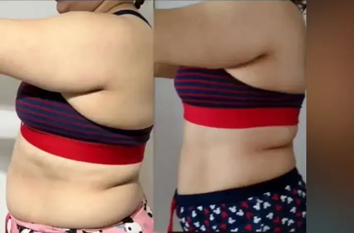
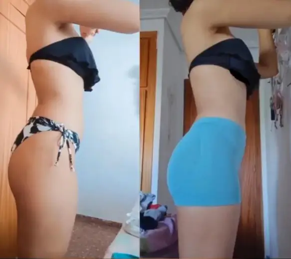
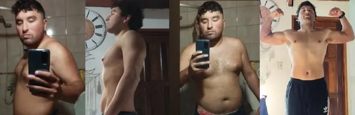
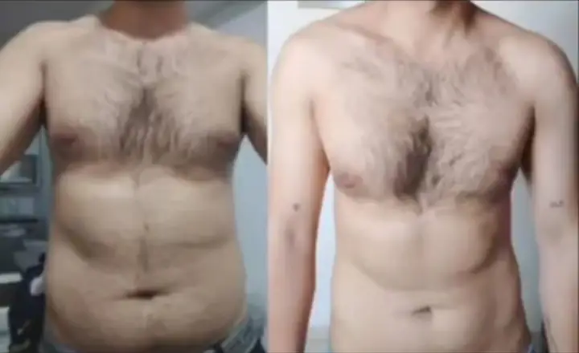
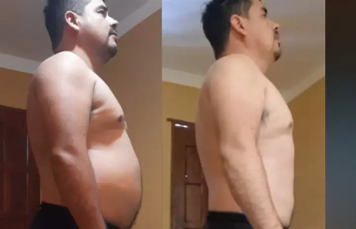
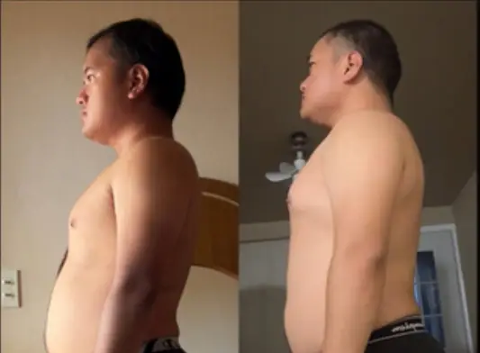
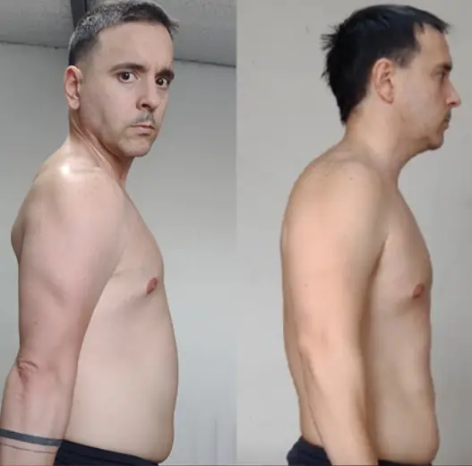

Chat conmigo y mi equipo todos los días
De mañana a noche, x lo que necesites (comida, rutina, ansiedad, dudas)
Estás dentro de TikTok: para que se abra WhatsApp tocá los 3 puntitos ··· de arriba a la derecha y elegí Abrir en el navegador
Coaching online con Ripo
Te ayudo con la comida (en base a lo que ya comés) y una rutina hecha para vos, en casa o en el gym, y me tenés por chat a mí y a mi equipo todos los días de mañana a noche
Hablar con Ripo por WhatsAppMe contás qué querés lograr y vemos si te puedo ayudar

Resultados
Son los mismos que te paso por WhatsApp, y hay +700 más etiquetados en las historias destacadas de mi Instagram















Cada cuerpo es distinto y el resultado depende de cada persona, por eso arrancamos viendo tu caso
Cómo trabajamos
Todo 100% online, con alumnas y alumnos de todo el país y de afuera
De mañana a noche, x lo que necesites (comida, rutina, ansiedad, dudas)
Grupales, los martes a las 19 y los sábados a las 11, un tema x semana y respondo TODAS las dudas. No son obligatorias: quedan grabadas y las ves desde el día 1 (en vivo entrás desde la semana 5)
Lista de compras y te ayudo a ordenar tus comidas en base a lo que ya comés y te gusta (podés comer lo mismo que tu familia, sin cocinar aparte), sin dietas estrictas ni comidas raras
La mayoría empieza en casa y sin material (con 1 hora 3 veces x semana alcanza), y cuando agarrás ritmo te ayudo a pasar al gym si querés
Antes de arrancar
No doy consejos médicos: ante cualquier duda de salud, primero tu médico, y apenas tengas el ok me escribís y arrancamos con TODO
El plan
Elegí dónde vivís para ver los valores
te llevás 1 mes gratis
Pago único
los 3 meses en 1 solo pago (te ahorrás )
Quiero arrancar con el pago únicoDespués de pagar, mandame el comprobante por WhatsApp así arrancamos
Ya pagué, mandar comprobantePreguntas frecuentes
Lo tenés arriba en el plan, según si vivís en Argentina o afuera. Podés pagar mes a mes o los 3 meses juntos en 1 solo pago (y te llevás 1 mes gratis)
Como quieras, la mayoría de mis alumnas empieza en casa y sin material, y una vez que se acomodan y agarramos ritmo, las ayudo a empezar el gym a las que quieren
Soy entrenador especialista en pérdida de grasa y ganancia de músculo, y mejoro tus comidas en base a lo que YA venís comiendo (no te doy cosas raras ni dietas estrictas)
Es lo que le pasa a casi todas mis alumnas antes de arrancar (después de probar mil cosas), y para eso está el chat conmigo y mi equipo todos los días: lo vamos ordenando SIN dejar de comer lo que te gusta y sin pasar hambre
No, quedan grabadas y las ves cuando puedas desde el día 1 (en vivo entrás desde la semana 5)
Si lo estás tratando con tu médico y te autoriza a entrenar y cambiar la comida, si: la rutina se adapta a lo que te marcó. Si no lo trataste o no tenés el ok, primero tu médico y apenas lo tengas me escribís (yo no doy consejos médicos)
Si, es todo 100% online y tengo alumnas de todo el país y de afuera. Se paga en dólares con tarjeta de débito o crédito (sin hacerte cuenta de PayPal), o x Prex o Western
En Argentina con Mercado Pago (desde acá mismo) o transferencia, y afuera con tarjeta, Prex o Western. Después me mandás el comprobante por WhatsApp y arrancamos
Si, la devolución aplica cuando, habiendo completado los meses que contrataste y haciendo el plan, no llegás al cuerpo que querés: ahí te devuelvo TODO lo que pagaste, cada centavo
Depende de cada cuerpo y de cuánto lo sostengas, x eso no te prometo kilos exactos. Lo que ves arriba son alumnas y alumnos reales, y muchas bajan 10 kg en 2 a 3 meses
Si, hay plan para dos, escribime y te paso el valor
De 13 a 17 se puede, pero tiene que estar de acuerdo un adulto que se haga cargo (mamá, papá o tutor): que me escriba y le explico todo. Menores de 13, no
Me mandás el comprobante por WhatsApp y te paso un formulario cortito, con eso te ayudo con la comida y la rutina a medida (según el cuerpo que quieras lograr)
Me contás qué querés lograr y vemos juntos si te puedo ayudar
Hablar con Ripo por WhatsAppo escribime al
A veces TikTok e Instagram no lo dejan abrir. Tocá los 3 puntitos ··· de arriba, elegí Abrir en el navegador y tocá el botón otra vez, o hacelo a mano: